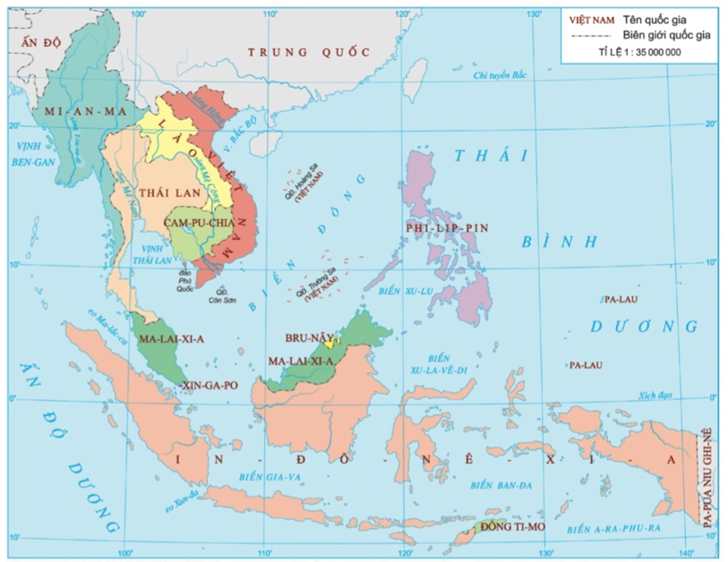
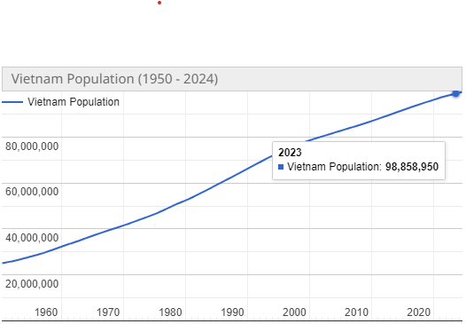
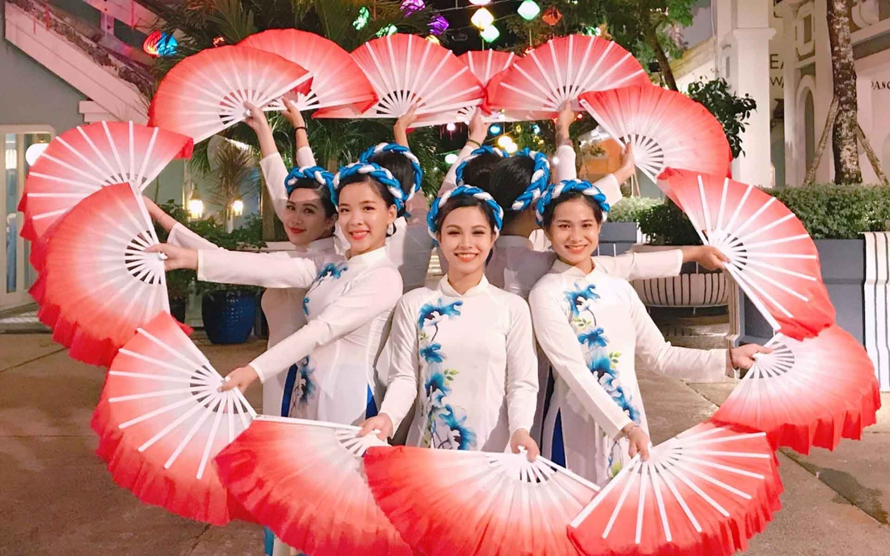
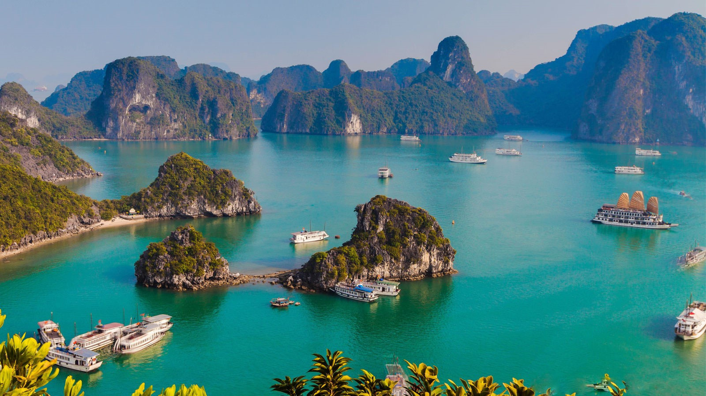

Introduction to Viet Nam
The geographical location
VietNam is a country located Southeast Asia, between East Sea and Truong Son mountain range.
The population
The population of Viet Nam is one of the largest in the region, with over 99 milion peoples estimated in 2024. Over 70% of the population is Kinh ethnic group, but there is significant diversity in ethnic and culture with minority ethnic communication such as Tay, Muong, Hmong and Khmer people.
The economic

The economic of Viet Nam is rapidtly developing, relying various sectors such as agriculture, industry, service and tourism. Major cities like Ha Noi and Ho Chi Minh are crucial role in country’s economic growth
The culture
Viet Nam is also famous for traditional festivals such as Luna New Year, Hung Vuong festival and more culture events. It creates a diverse and rich tapestry for tourist to explore.
The tourism
In terms of tourism, Vietnam is an attractive destination with natural beauties such as Ha Long Bay, the Mekong Delta, beautiful beaches, as well as world cultural heritage such as Hue and Hoi An. In addition, the culinary culture is rich and very famous for dishes such as pho, banh mi, spring rolls, and many other dishes.